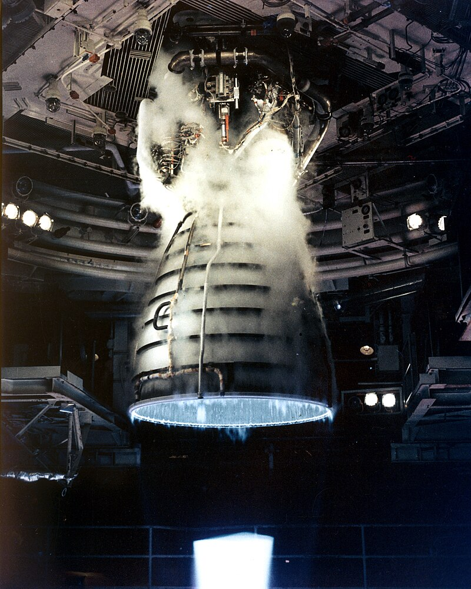
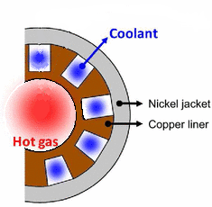

As I've discussed in the other sections, rocket engines produce thrust by igniting a fuel and then accelerating the exhaust. Unlike a car engine or a turbine engine, these fules can burn at thousands of degrees for long periods of time. So at such high temperatures for prelonged periods, why doesn't a rocket engine melt?
Engineers designed some very clever solutions to combat the heat of the internal combuistion chamber. One of these solutions envolves pumping cryogenic liquid oxygen around the engine to cool it down.
The image above is of the RS-25 engine use on the space shuttle, it has a series of pipes that run along the outside of the engine nozzle. These pipes pump liquid oxygen around to combat the hot temperatures that can reach up to ~900°C! The nozzle of a rocket engine is not as hot as the combustion chamber so a solution like this wouldn't work.
The combustion chamber of a rocket engine can reach upwards of 3300°C, the previous method discussed would not be able to pull that much heat out of the system. As a result engineers designed a new solution capable of dealing with this heat.
In the walls of the combustion chamber are small cut outs that allow for a liquid to flow through them. By cooling the walls this way it means that the heat can be directly taken away rather than having a buffer like with the pipes above. Without this system in place the engine would melt the walls away and eventually blow up.